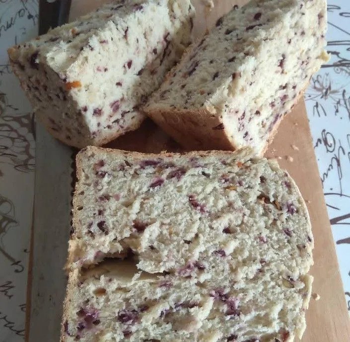
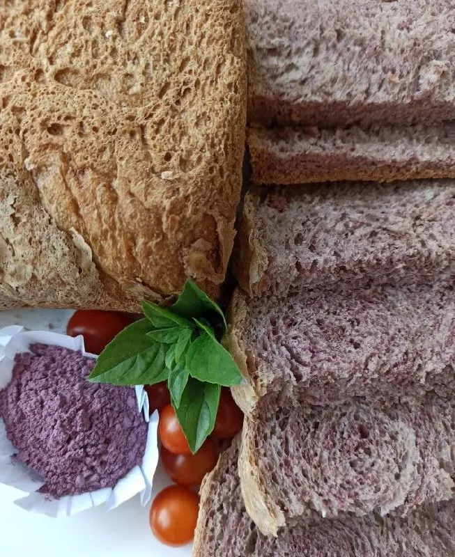

Описание
Батат отлично подходит для выпечки — он делает тесто мягким, слегка сладковатым и придаёт красивый цвет. Можно использовать как пюре варёного или запечённого батата, так и сырой тёртый.
Булочки можно формировать любой формы, добавлять варенье в качестве начинки, а сверху посыпать кунжутом, маком или любыми орехами.
Ингредиенты
- Вода — 300 мл
- Растительное масло — 2 ст. л.
- Соль — 1 ч. л.
- Сахар — 2 ч. л.
- Дрожжи (сухие) — 2 ч. л.
- Мука — 3,5 чашки (1 чашка = 250 мл)
- Яйцо — 1 шт.
- Сахар — 3-4 ст. л.
- Батат (пюре или тёртый)
- Кунжут, мак или орехи — для посыпки
Приготовление
1
Замес теста. Смешайте все ингредиенты (вода, масло, соль, сахар, дрожжи, мука, яйцо), хорошо вымесите тесто. Оставьте подняться.
2
Добавление батата. Когда тесто поднимется, добавьте батат — пюре варёного/запечённого или сырой натёртый на крупной тёрке. Снова вымесите и оставьте подняться второй раз.
3
Формирование. После второго подъёма тесто готово. Сформируйте булочки любимой формы. Можно добавить варенье в качестве начинки, а сверху обсыпать кунжутом, маком или орехами.
4
Расстойка и выпекание. Выложите булочки на противень, застеленный бумагой, дайте 20 минут подняться. Выпекайте 15-20 минут при 200°C. Духовки у всех разные — следите за процессом самостоятельно.
Галерея

На первом фото в тесто добавлено пюре варёного (запечённого) батата. На втором — сырой батат, натёртый на крупной тёрке.